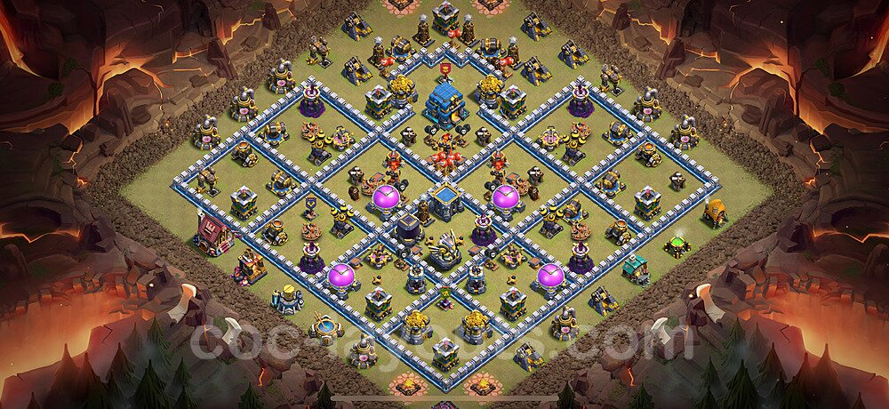

Panduan Base Anti 3 Bintang di CWL Champion League
Base ini dirancang khusus untuk melawan meta serangan 'Root Rider' dan 'Super Archer Blimp' yang sedang populer di liga tinggi. Fokus utamanya adalah memisahkan kompartemen Town Hall dan menempatkan jebakan tornado di jalur yang tidak terduga.
Layout Base:
